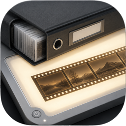

为每一卷光，留一张观片台。
MuseFilm
让一整卷光，
重新回到眼前。
MuseFilm 把胶卷、扫描与拍摄记忆安放在一处。像在观片台上展开底片，先看见一卷的呼吸，再靠近那张真正留下来的照片。
79 次 GitHub Releases 已验证下载

MuseFilm

为每一卷光，留一张观片台。
让一整卷光，
重新回到眼前。
MuseFilm 把胶卷、扫描与拍摄记忆安放在一处。像在观片台上展开底片，先看见一卷的呼吸，再靠近那张真正留下来的照片。
79 次 GitHub Releases 已验证下载
MACOS · 01 / 08
从胶卷开始
围绕每一卷整理照片、日期、相机、地点、标签与冲扫记录，让一组扫描重新成为完整的拍摄记忆。
MACOS · 01 / 08
胶卷库
保存胶片品牌、感光度、格式与使用记录，在下一次装卷之前重新找到熟悉的色彩。
MACOS · 01 / 08
数字观片台
像查看底片一样浏览整卷影像，在全局、细节和元数据之间自然切换。
MACOS · 01 / 08
重新发现
按时间、器材、胶片、地点与标签快速回到某一卷、某一次旅行或某一束光。
8 次光影在此停留
滚动展开胶片从设计开始，本地优先
没有云端，没有重复图库，没有强制迁移。
照片仍然保存在原来的硬盘位置。你可以自由备份、迁移，也可以在离开 MuseFilm 后继续拥有完整的照片库。
为摄影而生
软件退到背后，让一卷胶片里的光、时间和记忆回到画面中心。
下载 MuseFilm
安装包由 GitHub Releases 托管，下载次数来自真实资产记录。
Windows 10 / 11 · 278 MB
—67 次下载
下载 Windows 版 ↓原生 SwiftUI · build 2 · 5.3 MB
—12 次下载
下载 macOS 版 ↓最新版本
正在从 GitHub 获取最新更新说明。
版本历史
正在读取 GitHub Releases…